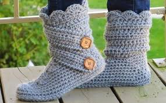
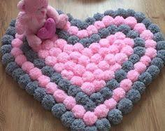
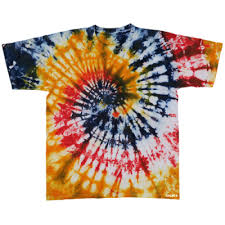
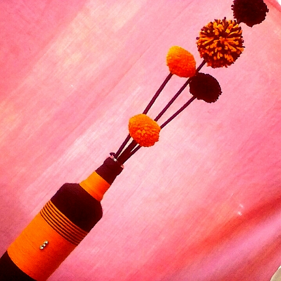
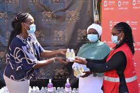
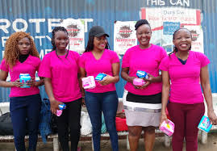
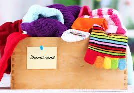
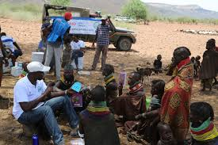

How youths can engage themselves positively and productively during this pandemic
In our current generation,making money and being successful in life is every youth's dream/desire.The big question is,how?How will this money be made?How will we become successful? Obviously not just from the blues.Something productive has to be done.During this pandemic,there's a lot of free time to ourselves and utilizing it well can change our lives forever.It is not estimated when exactly this pandemic will come to an end or if it will actually end and so return to previous jobs is not guaranteed. Most families now depend on hand to mouth incomes, youths being affected the most by early pregnancies. There are a million and one ways in which youths can engage themselves positively and productively during this covid-19 pandemic.Some of the income generating activities that the youth can engage in include:
- Being creative.Social media is full of influencers and following some creative stuff that people do can make you develop an interest in making creative stuff and selling them online. An example is tie and die T-shirts.These T-shirts are widely worn by many people nowadays and keeping up with that trend will make you an income as long as you've followed some tutorials and you are good at it.
- Learning and understanding hidden talents that were never discovered before such as crotcheting, singing,dancing since there's a lot of time to spend by yourself during this pandemic.This will greatly help since you will have employed yourself.
- Online businesses are other very gradually evolving businesses worldwide. Engaging ourselves in them is a positive and productive income generating activity.
- Offering childcare and babysitting services at a fee is also a way of productive engagement.
- Being YouTubers.Content creators are also earning a lot where they get to express themselves in different ways in YouTube and addressing real life situations to people online,tiktok being an enormous and trending content creation platform.




There are also other ways in which the youth can engage themselves positively and productively through non-paying community services.One way in which they can engage themselves positively in non-paying productive activities includes supporting communities in different ways through maintaining access to basic services and providing humanitarian assistance.Such services may include raising enough funds to help in:
- Distributing soap, installing handwashing stations, producing bottles of home-made hand sanitiser and making protective masks.
- Handing out of food packages and sanitation kits, delivering free, anonymous mental health services.
- Maintaining the menstrual health of women and girls in rural areas during lockdown.
- Providing warm clothing to children in need from different schools and villages.
- Performing a community clean up where the youth visit the elderly and clean up their homes or even cook for them.



